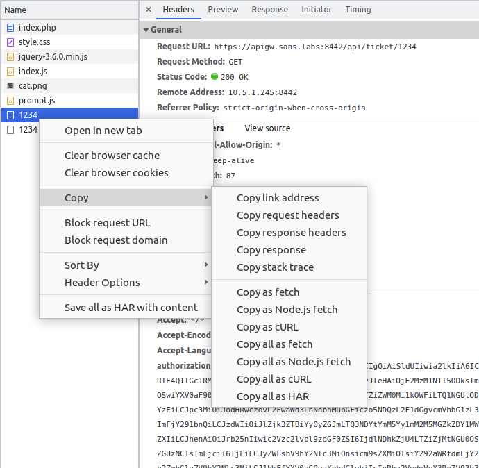
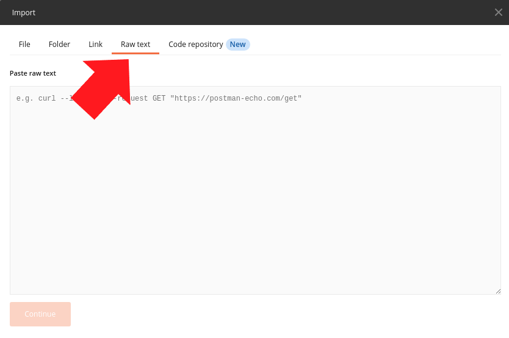
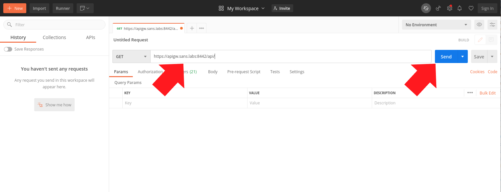

Exercise 5.3 - API Gateways and JSON
Objectives
Estimated Time: 20 minutes
Part 1:
You will experiment with Kong, and API Gateway, and Keycloak, and identity management and access solution. The goal of part 1 is to understand the architecture and to decode the JWT used for authentication and access control.
Part 2:
The JWT does include additional entitlements. Part 2 will explore how an attacker could take advantage of that information.
Requirements
- [x] Lab VM
Part 1: Architecture and JWT Token
Getting Started
This exercise requires a number of interconnected containers: 1. Kong Database: A Postgres database used to store credentials 2. Kong API Gateway: The Kong API Gateway. 3. Konga: A web based admin interface for Kong 4. Keycloak Database: A second Postgres database used to store Keycloak credentials 5. Keycloak: Our identity management and access solution. 6. PHP Website/API: A website and API that will use Keycloak/Kong
To start these containers, run
apigw start
Once started, open the browser and open https://apigw.sans.labs . Important: Use HTTPS.
No Hints
Log in using the credentials student/training. Find the "Bearer" token used for authentication and decode it. See Netwars for the questions to answer
Step by Step
-
Browser to https://apigw.sans.labs/ . Important: use HTTPS.
-
Click on Login. This will lead you to the Keycloak login screen.
-
Enter the username "student" and the password "training".
-
Enter a ticket number (e.g. 123) and click "Search" You will see a popup stating: "Ticket #123 We will get to it whenever we are done napping and grooming".
-
Open the Browser's developer tools.
-
Select the "Network" tab in the developer tools.
-
Enter another ticket number and click search. You will see a similar popup.
-
You will see 2 requests in the network tab. One is marked as "Preflight" in the Initiator column. Click it and inspect the request. You should see that the "Request Method" is "OPTIONS" and the browser is asking for permission to send a POST, GET or OPTIONS request while including authorization and content-type headers.
-
Click on the 2nd request. The request includes an authorization header with "bearer" token. Click on the "view JWT" link below the search form to answer the Netwars question for this exercise.
Part 2: Explore the JWT roles
No Hints
The API has a number of additional features that are not obvious when using the application. Try to figure what is available and how to use these features.
-
Use the applications "Search" feature to trigger another request to the API.
-
Find the request in the browser's debugger "Network" tab. Make sure not to select the "Preflight" request.
-
Right click on the request and select Copy->Copy as cURL

-
From the application tab on the left hand side, launch the program Postman by clicking on the icon.
-
Once Postman is loaded, near the upper left hand corner, click on the Import button (it's next to the orange "New" button).
-
In the popup, select Raw Text 
-
Paste the content in the input box below. Then click Continue at the bottom. In the next screen, click on the orange Import at the bottom right side of the window.
-
The cURL command (HTTP Request with details) is imported into Postman. Postman is a very versatile HTTP request crafting tool. We will see what it can do for a situation like what we have on hand. Edit the URL on the request to https://apigw.sans.labs:8442/api/ then click Send. If Postman complains about TLS issue, select disabling of the SSL verification.

The response shows us that this REST based API has multiple operations that can be invoked. The information returned by these operations is the subject of the NetWars challenge. You may execute these operations by adding the respective name of the operation to the URL.
Info
After this exercise, please run the following command to stop the numerous containers required for this exercise.
apigw stop
Conclusion
There is more here then we explored. Experiment. Kong and Keycloak are solid solutions to help protect APIs. But they have to be configured correctly and we can't rely on obscurity (hidden features) to protect information. Each request needs to be authenticated, access controlled and validated.